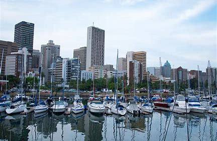
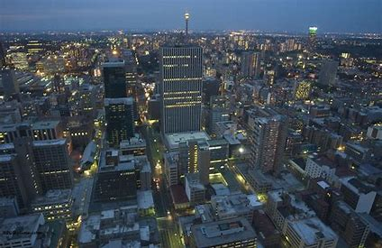

Kruger National Park is one of the world's most famous safari parks. One of the oldest game reserves in South Africa, the park lies about a 3.5 to 4.5 hour drive from Johannesburg and offers visitors the chance to see the "Big Five": lion, leopard, buffalo, elephant, and rhino, as well as an astounding diversity of other wildlife. It's also home to bushman rock paintings and archaeological sites. Visitors can explore Kruger on the large network of sealed roads; organize a walking safari; or soar over the vast grasslands, gallery forests, and river systems in a hot air balloon.
  Home